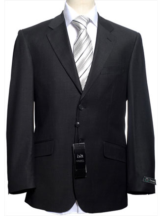

Top 5 favourite things in your wardrobe!
I want to just put Green Hooded Sweatshirt five times, but hey;
- Green Hooded Sweatshirt
- Mario Sub-Level Hooded Sweatshirt
- ‘Zombie Ghosts Leave this place’ T-shirt
- 'Adventure Time’ T-Shirt
- Suit
